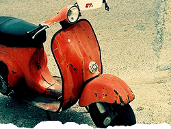

 image: bricolage 108“His speed was growing ferociously.”
It was one of those wonderful summer vacation days, where my only care was hanging out with my friends. Not that the school was a big obstacle but it is much better when no school duties weigh on your mind. So one fine afternoon my best friend Mitko rang at the door bell and told me he got one of those scooters that were so convenient to cruise on along the jammed streets of the city. So far so good, but we were fifteen-years-old and one may obtain a permit to drive a scooter only when aged 16. But this didn’t stop his parents to give him the scooter as a gift. So out we went together with another friend of ours to enjoy a ride on the brand new acquisition. Knowing we would be breaking the law if we were riding on the street, we decided to go to the yard of our school, which, being vacation time, was completely empty. We dragged the black motorbike to the schoolyard, making our way through numerous small streets so that we avoid meeting the police and finally we reached the school. Mitko got on the scooter and sped away. Keeping in mind that it was his first attempt he did it pretty well. Even I went on it the scooter, despite my fear of high speeds, not that this soap-box was able to be that fast, but still … Off I was, making a few circles around the yard and making plans to show off the new toy to the whole district. After that we and the other guy, Yana, sat on the staircase in front of the entrance of the school. Being typical girls we could not remain interested in a vehicle for too long. Mitko being a typical guy continued to cruise forwards and backwards in the yard. Yana and I talked all kinds of stuff, which I find impossible to remember now, but at the same time we were watching Mitko, who continued to show off, trying to attract our attention.
It was then, at one moment, when he had reached the furthest part of the yard that he stepped on the accelerator and headed towards us. I was watching him coming closer and closer to the wall of the school building and he was growing bigger and bigger, while his speed was growing ferociously … I remember thinking each second: “Now he is going to press the brakes, now he is going to press the brakes …,” but he was not pressing the brakes and the next memory I have replays only in slow motion … just like in the movies. I thought it was impossible to see something in this way, but up to this very day I remember how the motorbike was flying towards me and just two meters to my side it slammed into the wall … I saw the motorbike swirling around and my best friend was hurled up and his body slammed against the wall, after which he slowly fell to the ground. For a second the terrifying thought that I had lost him crossed my mind. I remember how I got up and ran towards him, I remember the relief I felt when I saw him standing up.
The experience did teach me something — that was the first time that I felt what it feels like to lose a friend. I had so many things that I wanted to tell him: how much he meant to me and how it was thanks to his friendship that I am the person that I am now. Unfortunately I have not had the guts to tell him all these things to this very day. Why? I myself don’t know. It is much easier to keep our mouth shut and talk about everyday stuff, the kind of stuff we discussed with my friends on the staircase on that day and which has left no imprint on my mind. The stuff that made us laugh but did not let us discuss our feelings. I do hope that he knows how I feel about him and one day I will have the courage to tell him how much my friendship means to me.
referenced works
- The 73rd school is located in a small, tranquil Sofia neighborhood, near one of Sofia’s largest parks – “The South Park”. The school, named after Vladislav Gramatik, a Bulgarian man of letters, is a school where foreign languages are taught and it has over 1300 students in all three levels of the general education in Bulgaria: elementary (1-4 grade), middle (5-7 grade) and high school (8-12 grade). The school has a long-running tradition not only in the general education, but also in the teaching of foreign languages – German (with Russian or French as a second language to be selected by the student). The school offers its pupils the opportunity to obtain, after a successful exam taken during their senior year, a German Language (Deutsches Sprachdiplom) issued by the Confederation of the German Education Ministers. 73rd school provides high quality education and combines academic classes with modern education methodology. The school also has great sport and entertainment facilities. Students have available for their use: a basketball court, two gyms, and a professional softball field. 73rd school “Vladislav Gramatik” is considered one of Sofia’s and Bulgaria’s most prestigious schools. ↩
location information
- Name: the yard of the 73 school
- Address: Gotse Delchev district, Georgi Izmerliev 2 Street
- Time of story: Afternoon
- Latitude: 42.695779
- Longitude: 23.328781
- Map: Google Maps

Write for Us!
We’re looking for short narratives describing pivotal moments of elation, confusion, absurdity, love or grief — or anything in between — inseparably tied to a specific place in Sofia.
Sofia:
Or receive updates by email
Addresses only used for the occational hitotoki mailing. Will not be sold to the crazy people on tram N22.
A list of all available RSS feeds is on the about page
commentary